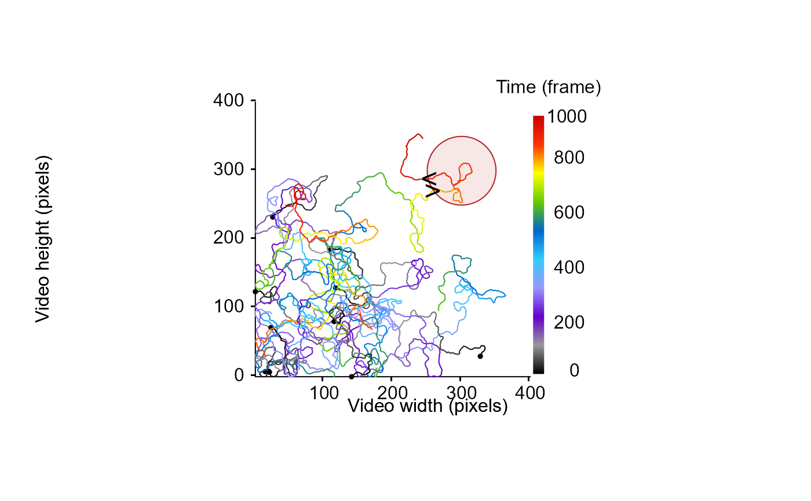

Identify and extract specified patterns/sequences from tracklets.
Source:R/IdStateSeq.R
IdStateSeq.RdGiven an object of class "tracklets" containing a list of tracklets including a vector containing behavioral patterns (e.g., behavioral states, location in areas) for each tracklet, the function identify and extract tracklets parts that contains the specified pattern.
Arguments
- trackDat
An object of class "tracklets" containing a list of tracklets and their characteristics classically used for further computations including a vector containing behavioral patterns (e.g., behavioral states, location in areas).
- Bstate
The name of the column indicating the state of the particle along each tracklet.
- pattern
A character string containing a regular expression to look for in the Bstate vector (see
grep).- perl
A logical value (i.e., TRUE or FALSE) indicating whether Perl-like regular expression should be used (default = FALSE, see
regex).- fixed
A logical value (i.e., TRUE or FALSE) indicating whether a literal regular expression (exact match) should be used (default = FALSE, see
regex).
Value
This function returns a list containing the part of the tracklets corresponding to the specified pattern. The parts of the tracklets corresponding to the specified pattern are grouped into a list named according to the id of the original tracklet (e.g. the first detected pattern extracted from the first tracklet is located in the list named tracklet_1 and is named tracklet_1.1).
Examples
set.seed(2023)
# generate some dummy tracklets
## start to specify some parameters to generate tracklets
TrackN <- 10 # the number of tracklet to simulate
TrackL <-
100:1000 # the length of the tracklets or a sequence to randomly sample tracklet length
id <- 0
TrackList <- MoveR::trackletsClass(stats::setNames(lapply(lapply(seq(TrackN), function(i)
trajr::TrajGenerate(sample(TrackL, 1), random = TRUE, fps = 1)), function(j) {
id <<- id + 1
data.frame(
x.pos = j$x - min(j$x),
y.pos = j$y - min(j$y),
frame = j$time,
identity = paste("Tracklet", id, sep = "_")
)
}), seq(TrackN)))
# draw all tracklets and the area of interest
MoveR::drawTracklets(TrackList)
# create an area of interest and draw it
ArenaEdge <- MoveR::circles(x = 300, y = 300, radius = 50, draw = T, col = adjustcolor("firebrick", alpha = 0.1), border = "firebrick")
# compute the distance to the edge of the area
# Also, if the distance to the area edge is negative the particle is inside else it is outside the area
TrackListV2 <- MoveR::analyseTracklets(
TrackList,
customFunc = list(
dist2ArenaEdge = function(x)
MoveR::dist2Edge(x, ArenaEdge, customFunc = "CircularArena"),
InOut =
function(x)
ifelse(x["dist2ArenaEdge"] < 0, "IN", "OUT")
)
)
# retrieve the moments where particles are entering the area
enteringArea <- MoveR::IdStateSeq(TrackListV2,
Bstate = "InOut",
pattern = "(OUT[1]?)(?!\\1)(IN[1]?)",
perl = T,
fixed = F)
# retrieve the moments where particles are leaving the area
leavingingArea <- MoveR::IdStateSeq(TrackListV2,
Bstate = "InOut",
pattern = "(IN[1]?)(?!\\1)(OUT[1]?)",
perl = T,
fixed = F)
# draw the moments where particles are entering (>) and leaving (<) the area (only one particle enters and leaves a single time)
graphics::points(enteringArea[["1"]][["1.1"]]$x.pos[which(enteringArea[["1"]][["1.1"]]$InOut == "OUT")],
enteringArea[["1"]][["1.1"]]$y.pos[which(enteringArea[["1"]][["1.1"]]$InOut == "OUT")],
pch = ">",
cex = 1.6)
graphics::points(leavingingArea[["1"]][["1.1"]]$x.pos[which(leavingingArea[["1"]][["1.1"]]$InOut == "IN")],
leavingingArea[["1"]][["1.1"]]$y.pos[which(leavingingArea[["1"]][["1.1"]]$InOut == "IN")],
pch = "<",
cex = 1.6)
